어린이 동화
등을 잡아 준 주님
하나님이 하온이의 뒤에 계셨던 날
푸른골 마을
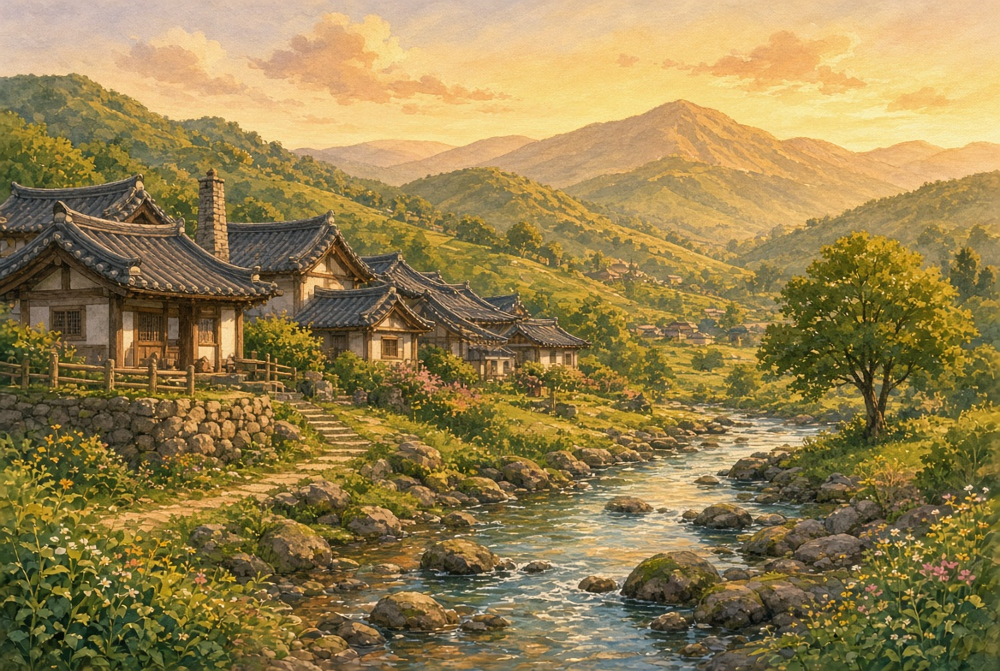
푸른골이라는 작은 마을이 있었습니다. 마을 위쪽에는 산이 있고, 산 아래에는 얕은 시내가 흘렀습니다. 집들은 낮고, 골목은 흙길이었습니다. 사람들은 서로 이름을 다 알고 살았습니다.
양치기 하온
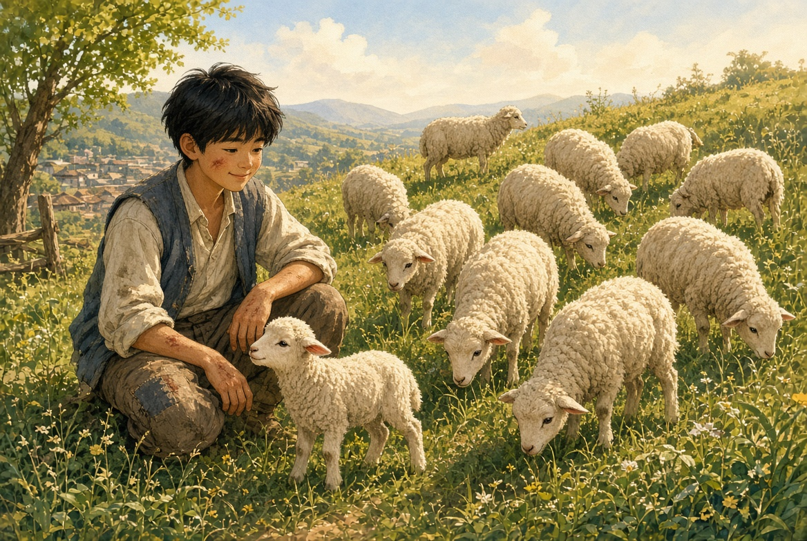
그 마을에 하온이라는 열두 살 아이가 살았습니다. 하온이네는 양이 열 마리밖에 없었습니다. 아버지는 허리가 아파서 산에 잘 올라가지 못했고, 그래서 하온이 매일 양을 치고 내려왔습니다.
하온은 말은 서툴렀지만, 양은 잘 챙겼습니다. 작은 양이 가시덤불에 걸리면 자기 손을 다쳐 가며 꺼내 주었습니다.
잠들기 전의 말
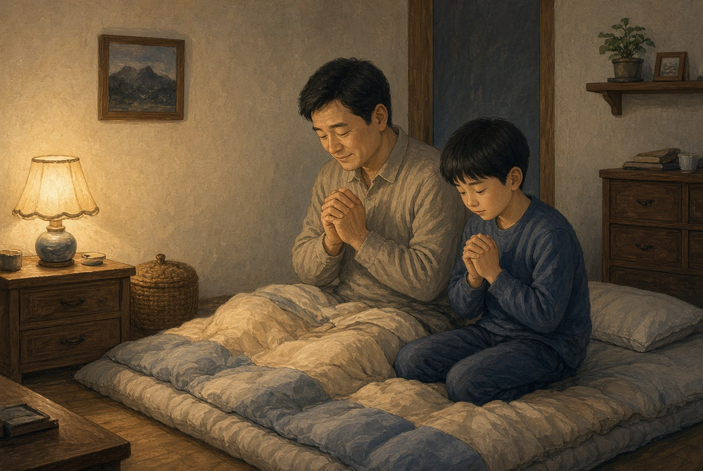
잠자리에 들 때면 아버지가 짧게 말했습니다.
“오늘도 하나님께 감사하거라. 양은 우리가 지키는 게 아니다.”
하온은 그때는 그 말이 잘 이해되지 않았습니다. 그래도 “감사합니다” 하고 눈을 감았습니다.
사라진 검은 양
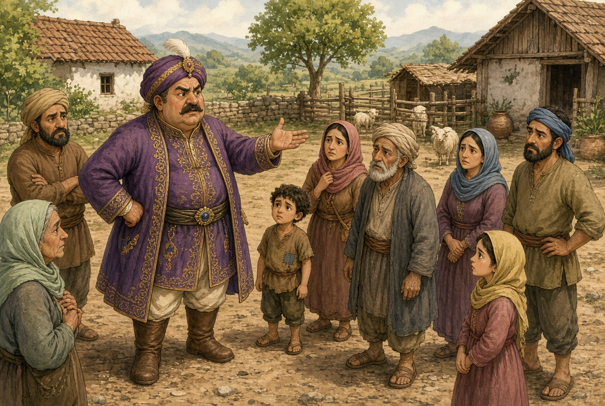
마을에는 부자 농부 만석이가 있었습니다. 만석이는 양도 많고, 일꾼도 많고, 소리도 컸습니다.
어느 날, 만석이네 검은 양이 없어졌습니다. 만석이는 마을 사람들을 모아 놓고 말했습니다.
“누가 내 양을 훔쳐 갔다. 찾아라.”
사람들은 서로 얼굴을 보았습니다. 하온은 그날 산 너머에서 다리를 다친 검은 양을 하나 보았습니다. 그래서 조용히 말했습니다.
“산 너머 가시덤불에 검은 양이 있었어요. 다리가 다쳐서 못 걸어갔어요.”
만석이가 눈을 가늘게 떴습니다.
“네가 그걸 어떻게 알아? 네가 숨겨 둔 거 아니냐?”
“아니에요. 저는 우리 양만 챙겼어요.”
하지만 만석이는 듣지 않았습니다. 없어진 양이 화가 났고, 누구 탓을 해야 속이 풀릴 것 같았습니다.
“저 아이를 데려와. 밤에 산에 숨겼을 것이다.”
산으로 달리다
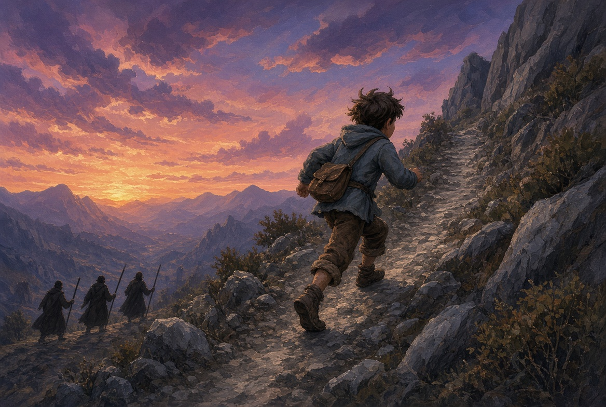
만석이네 일꾼 세 명이 막대기를 들고 하온을 따라왔습니다. 하온은 집에 갈 수가 없었습니다. 아버지까지 혼나게 하고 싶지 않았습니다. 그래서 양 우리 문을 닫고, 산으로 뛰어 올라갔습니다.
뛰어가면서 하온은 작은 소리로 말했습니다.
“하나님, 저 혼나러 가는 거 아닌데요. 저 양 안 훔쳤어요.”
산은 대답하지 않았습니다. 그래도 하온은 그 말을 두고 가지 않았습니다.
크게 넘어지다
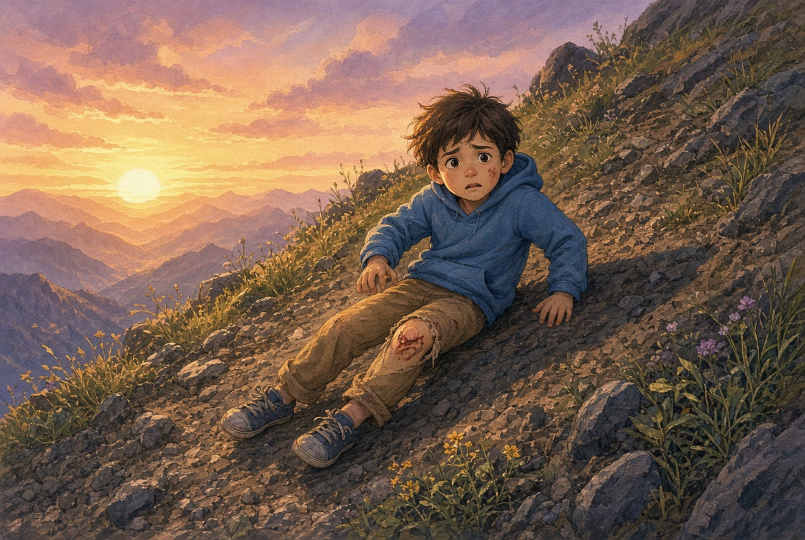
산길은 돌투성이였습니다. 하온은 넘어지고, 일어나고, 또 넘어졌습니다. 무릎이 아팠지만 멈출 수가 없었습니다. 뒤에서 발소리가 들렸습니다.
“거기 서!”
하온은 서지 않았습니다. 해가 산 뒤로 넘어가고, 산그림자가 얼굴을 덮었습니다. 마지막 비탈에서 발이 미끄러졌습니다. 하온은 크게 넘어졌습니다. 손이 돌에 긁히고, 숨이 턱까지 찼습니다.
뒤에서 일꾼들의 그림자가 길어졌습니다. 하온은 생각했습니다. 오늘은 집에 못 가겠구나.
물이 올라오다
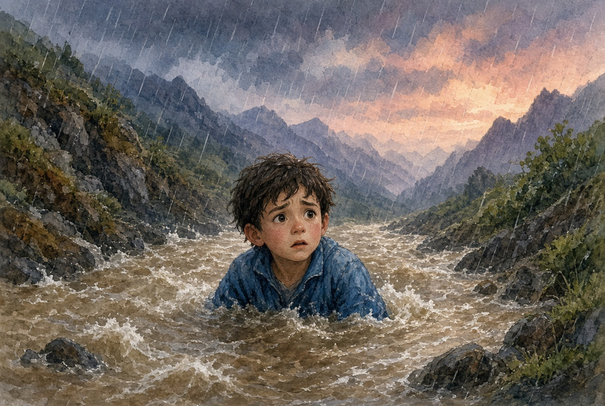
그때 산 위에서 큰비가 내리기 시작했습니다. 작은 시내가 순식간에 굵어졌습니다. 흙물이 하온의 신발을 삼키고, 바지춤까지 올라왔습니다.
하온은 헤엄을 칠 줄 알았습니다. 하지만 이 물은 헤엄치는 물이 아니었습니다. 사람을 잡아당기는 물이었습니다. 발이 돌에 끼었습니다. 물이 배까지, 가슴까지 올라왔습니다.
주님, 살려 주세요
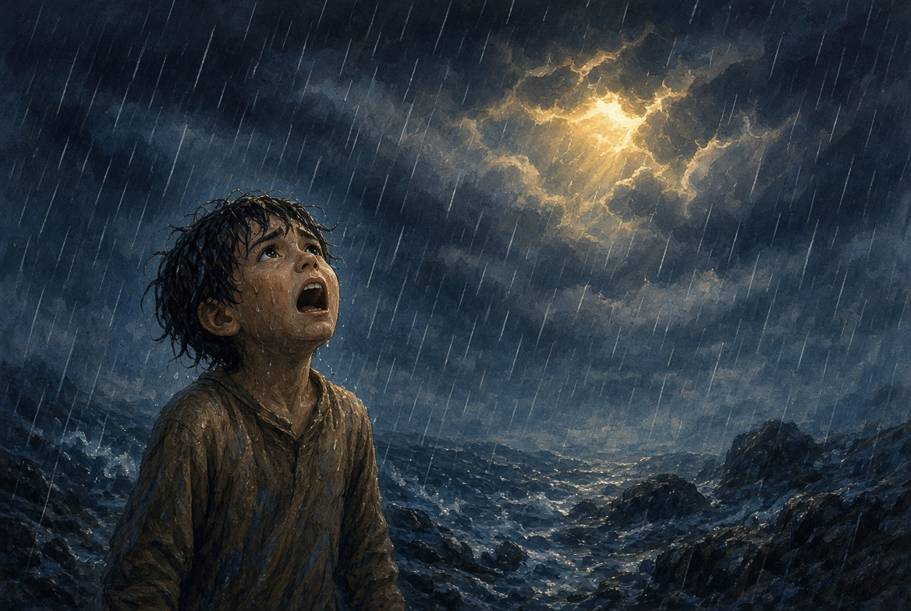
하온은 소리를 지르고 싶었습니다. 그런데 물이 목을 막아 말이 잘 나오지 않았습니다. 그래도 하온은 하늘을 보았습니다. 비와 구름과, 그 위의 어두운 저녁을 보았습니다.
그리고 있는 힘껏 소리쳤습니다.
“주님, 살려 주세요!”
이번에도 긴 기도를 하지 못했습니다. 다만 지금은 주님밖에 보이지 않았습니다. 그래서 주님을 부르고 말한 것이었습니다.
하늘이 움직이다
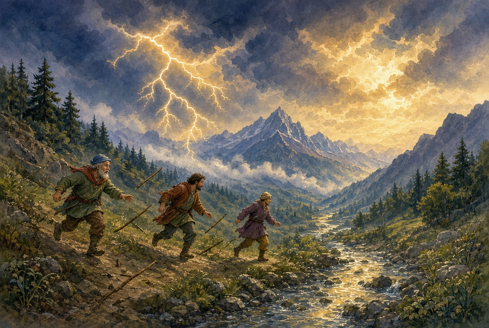
그때 이상한 일이 생겼습니다. 번개가 산 이쪽을 한 번 밝히고, 바로 뒤에 큰 천둥이 골짜기를 울렸습니다. 일꾼들은 깜짝 놀라 뒷걸음쳤습니다.
“산이 무너진다!”
세 사람은 막대기를 떨어뜨리고 아래로 도망갔습니다. 비는 아직 남았지만, 하온 앞의 물줄기가 조금 약해졌습니다. 어디선가 따뜻한 빛이 비 사이로 떨어졌습니다. 그 빛이 물 위에 다리를 놓지는 않았습니다. 대신 하온이 디딜 돌이 보였습니다.
하온은 그 돌을 밟고 기어 나왔습니다. 물기가 턱에서 떨어졌습니다. 기침이 났습니다. 살아 있었습니다.
고맙다는 말은 바로 나오지 않았습니다. 먼저 나온 말은 이것뿐이었습니다.
“하나님… 저 아직 살아 있어요.”
등을 잡아 주시는 손
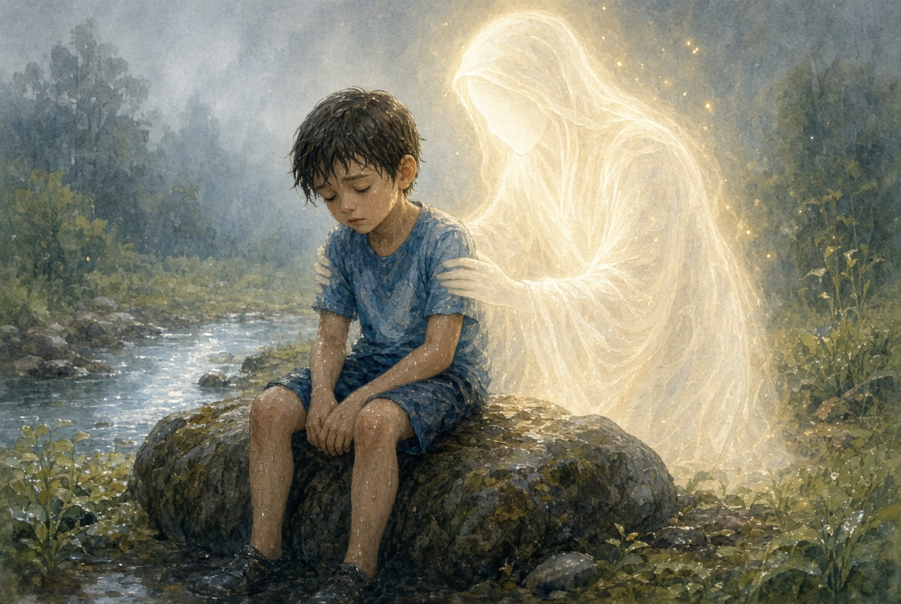
골짜기 바위 위에 하온이 주저앉았습니다. 다리가 후들거려 일어날 수가 없었습니다. 그때 뒤에서 따뜻한 손이 하온의 등을 받쳐 주었습니다.
하온이 고개를 돌렸습니다. 흰 옷인지, 빛인지, 잘 보이지 않았습니다. 비에 눈이 젖어 있었기 때문입니다. 그 사람은 낮게 말했습니다.
“지금은 일어서지 않아도 된다. 내가 잠시 등을 잡고 있을게.”
하온은 그 등에 기대었습니다. 심장이 아주 세게 뛰다가, 조금씩 느려졌습니다.
하온이 물었습니다. “우리 양은요? 아버지는요?”
등 뒤의 목소리가 말했습니다.
“양은 우리 안에 있다. 아버지도 문을 닫고 기다린다. 너는 혼나러 온 게 아니다. 내가 너를 여기까지 지키셨다. 살아 돌아가면 된다.”
하온은 그 손이 누구 손인지 정확히 보지 못했습니다. 다만 마음속에서는 이렇게 들렸습니다. 주님이 내 등을 잡고 계시는구나.
검은 양이 내려오다
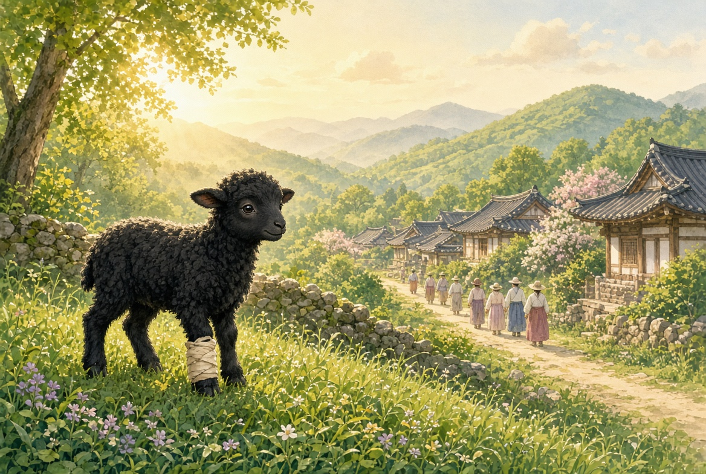
다음 날 아침이었습니다. 하온이 마을로 내려오자, 만석이네 검은 양이 산 아래 밭에서 발견되었습니다. 다친 다리를 끌고 스스로 내려온 것이었습니다. 하온이 훔친 게 아니었습니다.
만석이는 얼굴을 붉히고 아무 말도 하지 않았습니다. 일꾼들도 산의 천둥 이야기를 하다 입을 다물었습니다.
무릎을 닦아 주시다
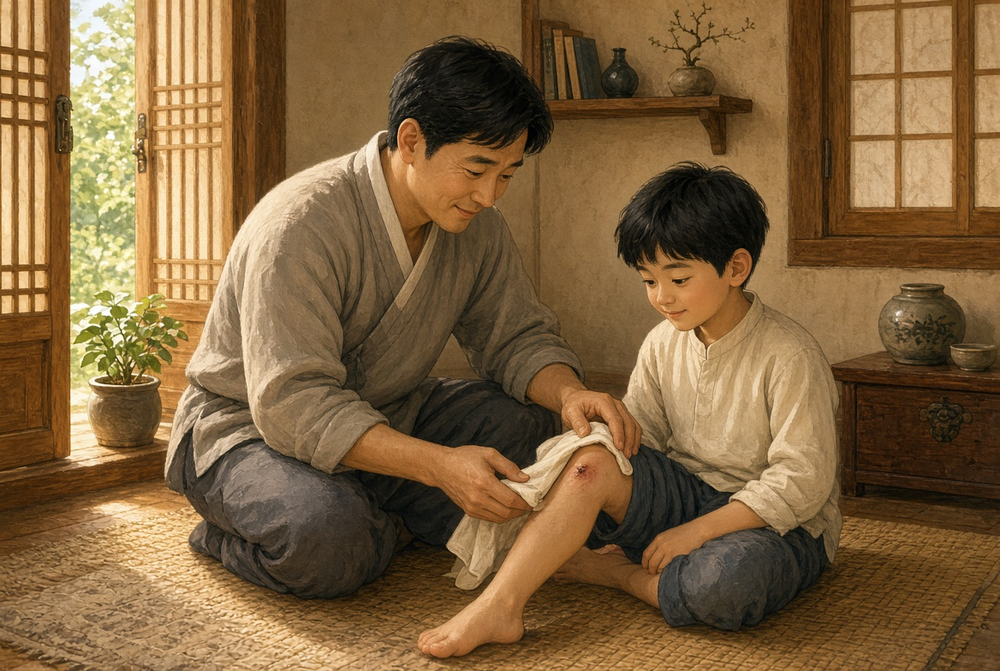
하온의 아버지는 아들의 긁힌 무릎을 닦아 주며 말했습니다.
“다시는 혼자 산으로 도망가지 마라.”
하온은 고개를 끄덕였습니다. 그리고 덧붙였습니다.
“혼자 아니었는데요. 넘어졌을 때, 주님께서 등을 잡아 주셨어요.”
아버지는 수건을 멈췄습니다. 그 말을 다 설명하라고 하지는 않았습니다. 다만 아들의 등을 한 번 쓰다듬고, 짧게 대답했습니다.
“그럼 우리도 하나님께 감사해야지.”
그날 저녁, 두 사람은 밥 먹기 전에 함께 말했습니다.
“하나님, 하온이를 산에서 건져 주셔서 감사합니다. 우리는 약해도, 주님은 강하십니다.”
이불 속에서
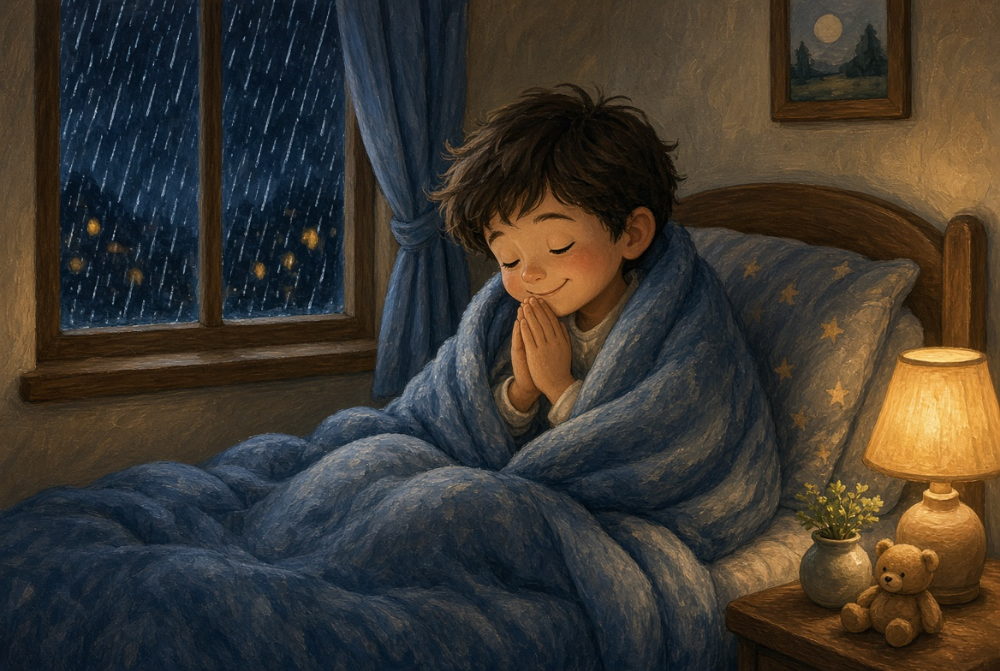
그날 밤, 하온은 이불 속에서 생각해 보았습니다. 제일 무서웠던 날은, 양이 없어진 날이 아니었습니다. 만석이가 소리친 날도 아니었습니다. 산에서 넘어지고, 물에 빠지고, 다리가 꿈쩍도 안 하던 그 저녁이었습니다.
그런데 그 저녁에 두 가지가 생겼습니다. 주님을 부른 것. 그리고 주님이 등을 잡아 주신 것.
하온은 속삭였습니다.
“하나님, 넘어져도 괜찮아요. 주님이 뒤에 계시면, 저는 다시 일어날 수 있어요.”
밖에서는 가랑비가 창을 두드렸습니다. 양은 우리 안에서 잠들고, 아버지는 코를 골았습니다. 하온도 눈을 감았습니다. 등은 아직 살짝 따뜻한 것 같았습니다.